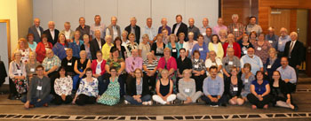
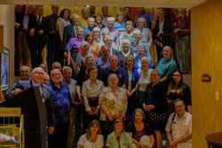
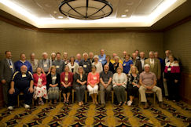

Find the convention schedule, speakers and registration here.
Keep track of the latest news on the 2022 virtual convention on the SGGEE blogspot.
SGGEE members have access to the presentations given at the virtual convention in 2021.
Click picture to enlarge
Presentations for 2019
The "Old Country" Meets the Internet (PDF) by Denise Kolesar
Workshop Presentation (PDF) by Gary Warner
Sample Legacy File (FDB) by Gary Warner
2018 Convention Report (PDF)
Presentations for 2018
Submitting data to SGGEE by Gary Warner
Addenda to Submitting data to SGGEE by Gary Warner
Navigating Online Records in Poland by Sigrid Pohl-Perry
Cyrillic & Polish Parish Records by Sigrid Pohl-Perry
Workshop Handout 2018 by Sigrid Pohl-Perry
Navigating Online Records Slide Presentation by Sigrid Pohl-Perry
Family Search online EWZ records by Karl Krueger
2017 Convention Report (PDF)
2016 Convention Report (PDF)
Click picture to enlarge

Using DNA in Genealogy Summary (PDF) by Earl Schultz
Using DNA in Genealogy (Part 1) (PDF) by Earl Schultz
Using DNA in Genealogy (Part 2) (PDF) by Earl Schultz
Changing Map in Europe seminar notes (PDF) by John Althouse
Sowing Winter Wheat seminar notes (PDF) by John Althouse
2015 Convention Report (PDF)
Click picture to enlarge

SGGEE Online Databases (PDF) by Gary Warner
A Place by Any Other Name Won't Merge (PDF) by Sigrid Pohl Perry and Gary Warner
EWZ (Einwandererzentralstelle) (PDF) by Karl Krueger - If you have problems viewing this PDF in your browser then download the file and view it with Adobe Viewer.
2014 Convention Report (PDF)
Legacy Family Tree Webinars: Legacy Family Tree - an Overview by Geoff Rasmussen
Legacy Family Tree Webinars: Legacy Family Tree - Beyond the Basics by Geoff Rasmussen
2013 Convention Report (PDF)
Click picture to enlarge

Tracking the Tribe (full PowerPoint presentation, large file, long download) by Sigrid Pohl Perry
SGGEE Online Databases ‐ how to get the most out of them, and also how to prepare your data for submission to the MPD Database by Gary Warner
For presentations by Jerry Frank, refer to December 2001 and March 2002 Journals (members only)
Report (PDF)
Picture 
Tracking the Tribe (PDF) handout
Presentations about Legacy software:
Legacy Overview (PDF)
12 Step Checklist Comparison (PDF)
(no report submitted)
{kind=link}
{kind=link}
{kind=link}